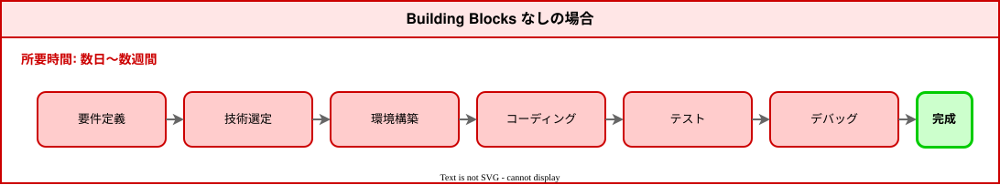
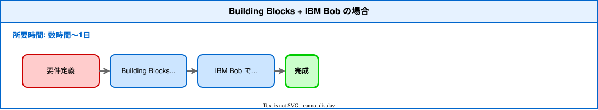

Welcome to Vector Search Hands-on¶
This hands-on workshop demonstrates how to build a "semantic search" feature (Vector Search) in a short time by combining Building Blocks and IBM Bob.
Prerequisites
IBM Bob is already installed and available for use (Plan: IBM Internal Version).
What You'll Experience in This Hands-on¶
Value of Building Blocks + IBM Bob¶
This hands-on workshop demonstrates how combining Building Blocks (pre-built technical components) with IBM Bob (an AI development assistant) can complete development that would typically take days to weeks in approximately 60 minutes.
Without Building Blocks (Time required: days to weeks):

Without Building Blocks, the following work is required:
- Vector database selection and learning
- Embedding model selection and integration
- API design and implementation
- Error handling
- Performance tuning
With Building Blocks + IBM Bob (This hands-on, Time required: approximately 60 minutes):

Responsibilities for each process:
- Building Blocks:
- Technology selection (Milvus, embedding models)
- Environment setup support (Bob mode, API samples)
- IBM Bob:
- Requirements definition
- Coding
- Testing
- Debugging
About IBM Bob's Coverage
IBM Bob can support the entire Software Development Lifecycle (SDLC) as an AI SDLC partner, from requirements definition to debugging. In this hands-on, Building Blocks provides technology selection (Milvus, embedding models) and environment setup support (Milvus setup, Bob mode), and the instructor prepares the Milvus environment in advance with Docker Compose, so IBM Bob focuses mainly on coding, testing, and debugging. However, if you use Plan mode, you can also utilize it in the requirements definition and design stages.
What are Building Blocks?¶
Building Blocks are pre-built technical components leveraging IBM's technology stack. Using Building Blocks accelerates solution development.
Features of Building Blocks¶
- Ready to use: Start using immediately without complex configuration or learning
- Best practices: Optimal implementation patterns designed by IBM's engineering team
- Integrated: Seamlessly integrates with IBM services like watsonx.ai and watsonx.data
- Customizable: Flexibly extend to meet business requirements using IBM Bob
Building Block Used in This Hands-on¶
Vector Search Builder (Milvus-based)
What it provides: Vector database (Milvus) construction and management capabilities
Included features:
- Milvus database setup
- Collection (data container) creation
- Embedding model integration (watsonx, HuggingFace, local)
- Data ingestion pipeline
- Vector search optimization
- IBM Cloud Object Storage integration
Integration with IBM Bob: Using Vector Search Builder mode, IBM Bob provides specialized support for Vector Search
Value of Building Blocks
Without Building Blocks: Read Milvus documentation, learn Python SDK, select and integrate embedding models (days)
With Building Blocks: Install Vector Search Builder and instruct IBM Bob (minutes)
Unique Innovations in This Hands-on
What Building Blocks Provide¶
Building Blocks provide the following technical components:
-
Vector Search Builder Mode
- File:
bob-modes/base-modes/vector-search-builder.zip - Contents:
- IBM Bob custom mode configuration
- AI assistant functionality specialized for Vector Search
- Milvus operation best practices
- Rule files, prompt templates
- File:
-
Data Ingestion Asset (FastAPI)
- File:
assets/data-ingestion-asset/ - Contents:
main.py: FastAPI application main bodyapp/: API endpoint implementationDockerfile: Containerization configurationrequirements.txt: Python dependency packages.env.example: Environment variable template
- Features:
- Document ingestion from IBM COS
- Document analysis based on Docling
- Embedding generation by IBM Watsonx
- Vector storage and index creation in Milvus
- API testing with Swagger UI
- File:
-
Setup Guide
- File:
README.md - Contents: watsonx.data + Milvus environment setup procedures
- File:
What This Hands-on Adds¶
In addition to the Building Blocks foundation, the following have been added for educational purposes:
setup/instructor/: Instructor Milvus environment (Docker Compose)setup/participant/: Participant connection test scriptsdocs/: Hands-on documentation (MkDocs)
1. Instructor-Participant Separation Architecture¶
Building Blocks alone:
- Each person builds their own Milvus environment (Docker/Podman/Colima)
- Individually download embedding models (approximately 200 MB)
- Environment setup takes about 30 minutes
This hands-on's innovation:
- Instructor: Centrally manages Milvus environment (
setup/instructor/docker-compose.yml) - Participants: Participate with only IBM Bob (
.bob/modes/+ connection information only)
2. Hybrid Delivery Support
Building Blocks alone:
- Assumes local environment execution
This hands-on's innovation:
- On-site: Local network sharing (
http://instructor IP:8001) - Remote: Document delivery via GitHub Pages or ngrok
3. API Key-Free Design
Building Blocks alone:
- watsonx.ai API key required
- Participants obtain and configure individually
This hands-on's innovation:
- Hugging Face Transformers used (no API key required)
- Local execution: Works with internet connection only
4. Progressive Learning Path
Building Blocks alone:
- Focuses on technical implementation
This hands-on's innovation:
- Part 1: Experience Vector Search (understanding)
- Part 2: Add features with IBM Bob (practice)
- Part 3: Code review and improvement (application)
Summary of Role Division¶
| Provider | What's Provided | Purpose |
|---|---|---|
| Building Blocks | Vector Search Builder mode FastAPI sample Milvus setup guide |
Technology foundation provision Development acceleration |
| This Hands-on | Instructor environment (Docker Compose) Participant scripts Educational documentation |
Educational design Learning experience optimization |
Benefits of This Hands-on
Building Blocks (technology foundation) + Hands-on unique innovations (educational design) = High learning effectiveness in a short time
- Setup time reduction: 30 minutes → 5 minutes (instructor centrally manages environment)
- No API key required: Using Hugging Face reduces participant preparation burden
- Flexible delivery format: Supports on-site/remote/hybrid delivery
- Progressive learning: Even beginners can progress from understanding → practice → application
What is IBM Bob?¶
IBM Bob is a development tool where AI assists with coding.
What IBM Bob Can Do¶
- Natural language instructions: Communicate what you want to do in words
- Automatic code generation: Automatically writes high-quality code
- Code review: Points out code issues
- Integration with Building Blocks: Provides technology-specific support through custom modes
Synergy with Building Blocks¶
Building Blocks alone:
- Basic functionality is provided, but customization requires technical knowledge
IBM Bob alone:
- Code generation is possible, but building from scratch takes time
Building Blocks + IBM Bob:
- Building Blocks instantly builds the foundation
- IBM Bob customizes with natural language instructions only
- Result: Achieve production-level quality in the shortest time
Comparison of Development Methods¶
| Development Method | Time Required | Required Skills | Code Quality |
|---|---|---|---|
| Without Building Blocks | Days to weeks | Programming, DB design, API design | Depends on developer skills |
| IBM Bob only | Hours to days | Basic technical understanding | High quality but time-consuming to build |
| Building Blocks + IBM Bob | Minutes to hours | Just need to instruct in natural language | Production-level high quality |
What is Vector Search?¶
Vector Search is a technology that searches by understanding the "meaning" of words.
Difference from Traditional Search¶
Traditional keyword search:
- "red sneakers" → Searches for products containing the characters "red" and "sneakers"
- "red running shoes" won't be found (different characters)
Vector Search (semantic search):
- "red sneakers" → Understands the meaning of "red" and "sneakers"
- "red running shoes" will be found (similar meaning)
- "beginner camera" → "entry-level digital camera" will be found
Real-world Use Cases¶
- E-commerce sites: "Find similar products" feature
- Internal search: "Find documents similar to this document"
- Customer support: "Find similar questions"
Hands-on Flow¶
Total: Approximately 60 minutes
| Part | Content | Time Required |
|---|---|---|
| Preparation | Vector Search Builder setup | 10 minutes |
| Part 1 | Experience Vector Search | 15 minutes |
| Part 2 | Add features with IBM Bob | 20 minutes |
| Part 3 | Verification | 15 minutes |
About This Hands-on's Documentation Design
Why Manual Methods Differ Between First and Second Half¶
In this hands-on, the first half (preparation, Part 1) describes both IBM Bob delegation and manual execution methods, but the second half (Part 2-3) describes only IBM Bob delegation methods. This is for the following reasons:
1. Complexity and Length of Manual Work
- First half work: Simple command execution (
pip install -r requirements.txt,python test_connection.py), can be completed in one line manually - Second half work: Editing multiple files, changing data models, response structures, error handling, etc., requiring dozens to hundreds of lines of code changes. Manual description would be very long and complex, making the documentation enormous
2. Educational Intent
- First half: Show options that "can be done with IBM Bob or manually"
- Second half: Let users experience the value that "what's difficult manually is easy with IBM Bob"
Experience the Value of Building Blocks + IBM Bob
In particular, the experience of completing complex code changes with a single instruction "Display product images in search results" is designed to most effectively convey the value of Building Blocks + IBM Bob.
Why This Instruction is Most Effective:
Building Blocks Effect:
- Vector Search knowledge: IBM Bob understands Milvus, embedding models, and vector search best practices through Vector Search Builder mode
- Existing foundation: Sample data, API structure, and data models are already prepared, and IBM Bob can add features using them
- No technology selection needed: Technology selection for Milvus, embedding models, API design, etc. is complete, and IBM Bob can focus on implementation
IBM Bob Effect:
- Natural language instructions: Just one line, natural Japanese expression, without any technical details
- Automatic code generation: Automatically executes editing of multiple files, data model changes, response structure changes
- Immediate results: Can verify operation immediately after instruction, getting the feeling that "it really worked"
Synergy of IBM Bob and Building Blocks:
- First experience in Part 2: The moment participants "add a feature themselves" for the first time, making it memorable
- Contrast with other instructions: Price filters and recommendation reasons are similarly easy, but this first experience is most impactful
- Gap with complexity: Work that would take days without Building Blocks is completed with one IBM Bob instruction
3. Building Blocks Value Proposition
- Let users experience the time reduction effect of "days to weeks → approximately 60 minutes"
- Emphasize this effect by omitting manual methods in the second half
4. Consideration for Time Constraints
- Designed for approximately 60 minutes total
- Just reading detailed manual methods would run out of time
- Focusing on IBM Bob delegation secures time for actual hands-on work
5. Complexity of Error Handling
When manually changing code, troubleshooting for syntax errors, indentation errors, type errors, logic errors, etc. is necessary. Describing all of these would make the documentation several times longer
6. Progressive Learning Design
- First half: Get familiar with using IBM Bob through simple tasks
- Second half: Experience IBM Bob's true value through complex tasks
This design allows participants to naturally understand IBM Bob's value and acquire practical skills.
Requirements¶
- Computer (Mac, Windows) and internet connection
- IBM Bob (already installed)
- Web browser (Chrome, Firefox, Safari, Edge, etc.)
Distributed by instructor:
- Hands-on procedure URL
- Vector Search Builder (zip file)
- Connection information (Milvus connection information)
Next Steps¶
Let's proceed to the Preparation page!